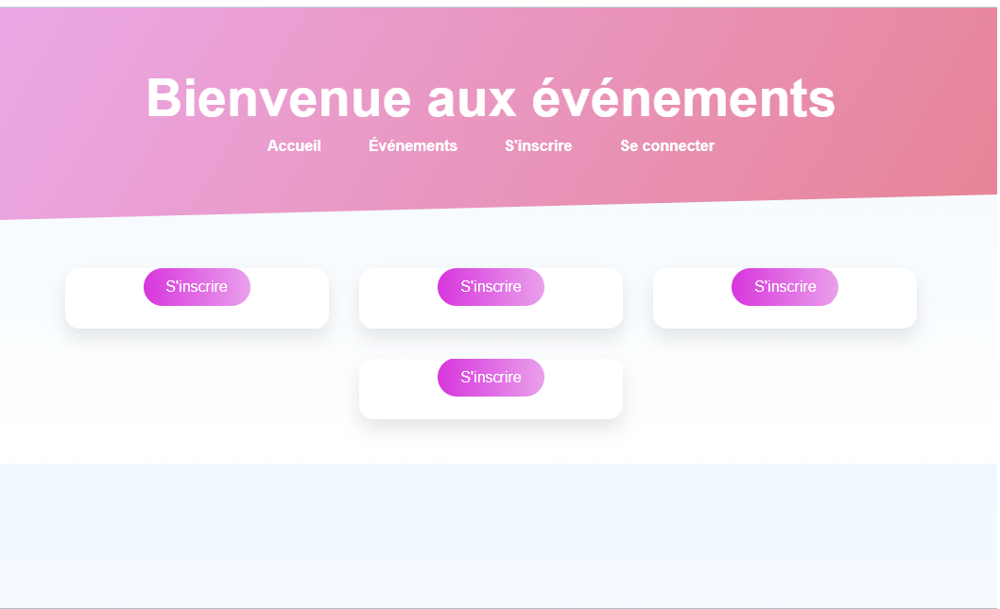
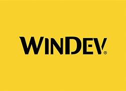
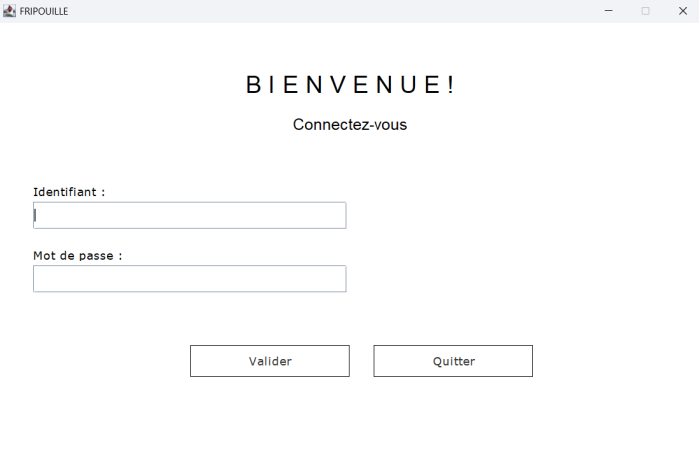
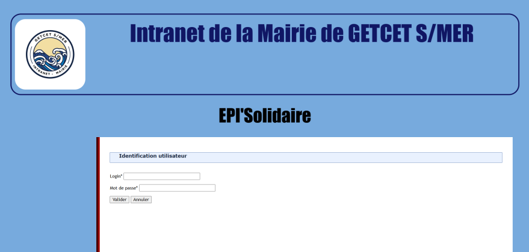
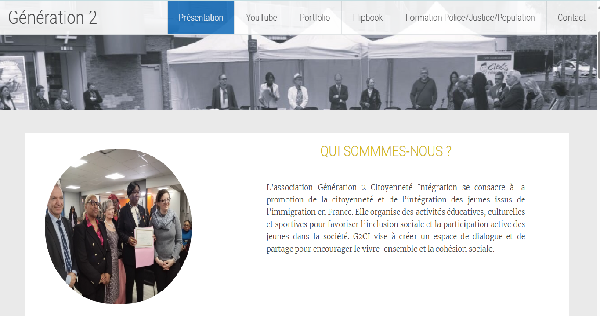

MES PROJETS RÉALISÉS
Nouvelle Vague
Langages : HTML, CSS, JavaScript, PHP codeIgniter
Description : L'application web "Nouvelle Vague" permet aux nouveaux arrivants de s'inscrire à divers événements pour découvrir la ville et rencontrer ses habitants.
Date : Mars - 2025
Stage - WinDev
Langages : WLanguage
Outils : WinDev
Description : Apprentissage de WinDev et compréhension de l'outil.
Date : Javier-Février 2025
Fripouille
Langages : Java MVC
Description : L'application Java "Fripouille" permet d'établir le catalogue des ventes pour un projet solidaire de vente de vêtements de seconde main à prix réduits.
Date : Janvier - 2025
EpiSolidaire
Langages : PHP, JavaScript, HTML, CSS
Outils : PHP MVC, MySQL
Description : Nous avons élaboré une application web pour la gestion d'une épicerie solidaire créée par la municipalité, dans le cadre d'un projet collaboratif.
Date : Octobre - 2024
Stage - Génération II
Outils : WordPress
Description : J'ai mis en œuvre mes compétences en développement web pour améliorer leur visibilité en ligne.
Date : Juin - 2024